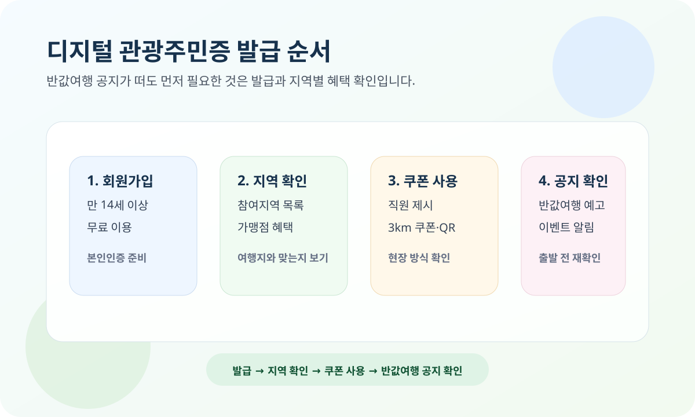

디지털 관광주민증은 인구감소지역 여행 혜택을 찾을 때 먼저 열어볼 공식 서비스입니다. 2026년 3월 23일 기준 대한민국 구석구석 디지털 관광주민증 메인에는 참여지역 정보와 함께 “대한민국 반값여행(지역사랑 휴가지원) Comming Soon” 공지가 보입니다.
이 글은 한국관광공사 디지털 관광주민증 메인과 서비스 소개 페이지를 기준으로 정리했습니다. 참여 지역과 혜택 업체, 이벤트, 반값여행 세부 조건은 바뀔 수 있으니 여행 전에는 공식 페이지를 다시 확인하세요.

디지털 관광주민증이란 무엇인가요?
한국관광공사 서비스 소개 페이지에는 디지털 관광주민증 서비스 이용은 무료이고, 만 14세 이상 회원이면 누구나 이용 가능하다고 안내돼 있습니다. 같은 페이지에는 서비스 지역을 대상으로 관광주민증 발급과 할인 혜택을 받을 수 있다고 적혀 있습니다.
즉, 실제 주민등록을 옮기는 개념이 아니라 여행 혜택을 받기 위한 디지털 회원증에 가깝습니다. 인구감소지역 여행 혜택을 찾을 때는 이 서비스가 출발점이 됩니다.
2026-03-23 현재 공식 페이지에서 보이는 포인트
- 메인 페이지에서 참여지역 목록을 바로 확인할 수 있습니다.
- 공지 영역에 대한민국 반값여행(지역사랑 휴가지원) 예고가 보입니다.
- 마케팅 정보 수신 동의 설명에는 이벤트, 기차여행, 반값여행 안내를 먼저 받아볼 수 있다는 문구가 있습니다.
따라서 지금 검색하는 독자는 “반값여행이 언제 뜨나”만 기다리기보다 관광주민증 발급, 참여지역 확인, 알림 수신 설정을 먼저 해두는 편이 낫습니다.
쿠폰은 어떻게 쓰나요?
서비스 소개 페이지 기준 쿠폰 이용 방법은 크게 세 가지입니다.
- 나의 통합 관광주민증을 직원에게 제시하고 확인받는 방식
- 가맹점 3km 이내에서 모바일 쿠폰을 받는 방식
- 가맹점 현장 QR을 스캔해 단계별로 쿠폰을 발급받는 방식
즉, 디지털 관광주민증은 단순히 발급만 하면 끝나는 것이 아니라 현장 제시, 위치 기반 쿠폰, QR 스캔 중 어떤 방식이 맞는지 같이 봐야 합니다.
여행 전에 먼저 해두면 좋은 것
- 회원가입과 본인인증을 미리 끝내기
- 참여지역이 내가 가려는 곳인지 확인하기
- 가맹점 혜택이 숙박, 식음료, 체험 중 어디에 있는지 살펴보기
- 현장 QR 사용이 필요한지 체크하기
- 반값여행 공지와 이벤트 알림을 수신할지 결정하기
특히 여행 당일 현장에서 회원가입부터 시작하면 동선이 꼬일 수 있습니다. 반값여행 같은 추가 혜택이 뜨더라도, 기본이 되는 관광주민증 발급이 먼저라는 점은 변하지 않습니다.
한 번에 요약하면
- 디지털 관광주민증은 무료이고, 만 14세 이상 회원이면 이용 가능합니다.
- 참여지역과 가맹점 혜택은 공식 메인에서 바로 확인할 수 있습니다.
- 쿠폰은 직원 제시, 3km 이내 모바일 쿠폰, 현장 QR 스캔 방식으로 사용할 수 있습니다.
- 2026-03-23 현재 공식 메인에는 대한민국 반값여행 예고가 보입니다.
- 세부 혜택과 일정은 바뀔 수 있으니 여행 전 공식 페이지를 다시 확인해야 합니다.
자주 묻는 질문
Q. 디지털 관광주민증은 유료인가요?
아닙니다. 한국관광공사 서비스 소개 페이지에는 무료 서비스라고 안내돼 있습니다.
Q. 지금 바로 반값여행을 신청할 수 있나요?
2026년 3월 23일 기준 메인에는 예고 공지가 보입니다. 실제 신청이나 세부 조건은 후속 공식 공지를 다시 확인해야 합니다.
Q. 가장 먼저 해둘 일은 무엇인가요?
회원가입과 발급 준비, 참여지역 확인, 가맹점 혜택 확인입니다. 혜택 공지가 열린 뒤에 계정을 만드는 것보다 미리 준비하는 편이 낫습니다.
공식 링크
참여지역, 이벤트, 반값여행 공지, 가맹점 혜택은 수시로 바뀔 수 있습니다. 실제 여행 전에는 위 공식 페이지에서 최신 참여지역과 쿠폰 조건을 다시 확인하세요.